Script, timing, cards, monitors and the local network in one app for Windows and macOS — and you can rewrite any of it while the show is on the air.
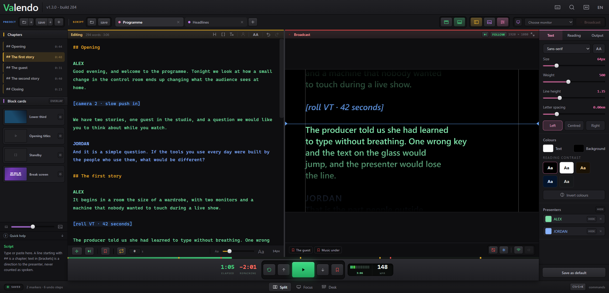
Not a scroller with extras bolted on. Every part of running a prompter lives in the same window, on the same keyboard, in the same project file.
Import txt, md, docx and pdf. Ten tabs, chapters, stage directions, markers, presenters in their own colours, and undo that survives closing the app.
Words per minute on a ruler, elapsed and remaining, a target duration the pace bends to meet, loop with a delay.
Any monitor, identified before you send a show to it. Mirrored, rotated, blacked out or frozen on a key.
Images, video, messages, and standby screens the app draws itself — replacing the script, or riding over it like a lower third.
One switch and any device on the wi-fi is a second prompter screen. Nothing to install.
Three working layouts, a command palette, remappable keys, interface zoom, quick help on every key, six languages.
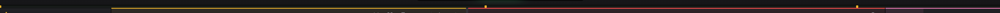
The left panel is the script. The right panel is what the presenter is seeing right now, at the output's real resolution. You type in one and the other changes — with the show live.
Every other prompter makes you stop, because they store the reading position in pixels. Change the text, the typeface or the margin and the layout reflows: pixel 4,200 is suddenly a different sentence, and the text jumps in the presenter's face.
Here nothing jumps. Fix a typo three paragraphs above the reading line, raise the type size, widen the margin — the word being read stays exactly where it is.
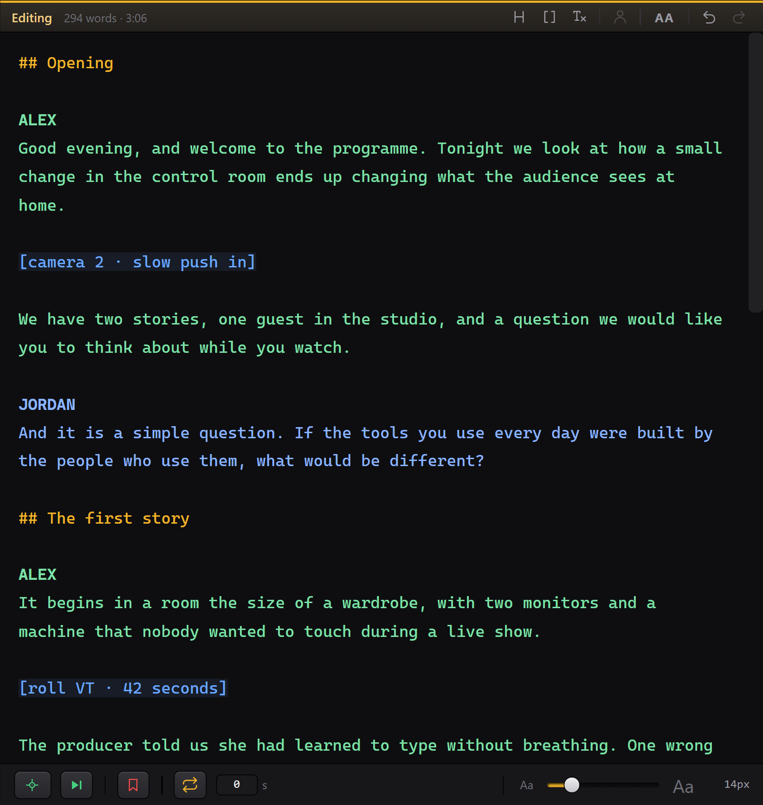
## opens a chapter. [square brackets] make a stage direction, never counted as words to be spoken.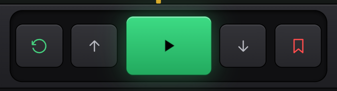
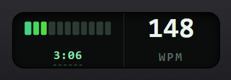
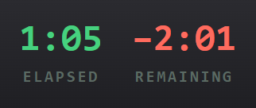
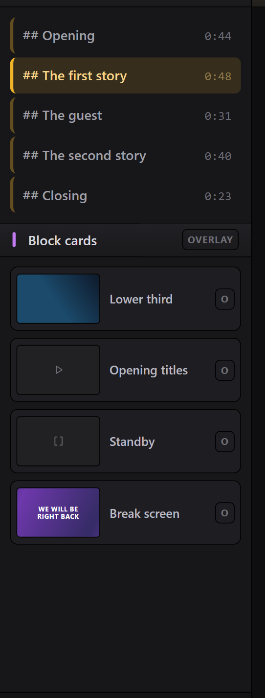
Select a name in the script, press the person key, and everything below that name reads in a colour of its own — in the editor, on the presenter's screen and on the network page. The next name picks up where the last one left off.
Chapters and stage directions keep their own colours and do not break the run: a direction in the middle of a speech does not hand the words to somebody else.
And the names can leave the output entirely. They leave the ruler with them, so the reading does not crawl through the gap where a name used to be — what stays is the colour, which is all the presenter needed the name for.
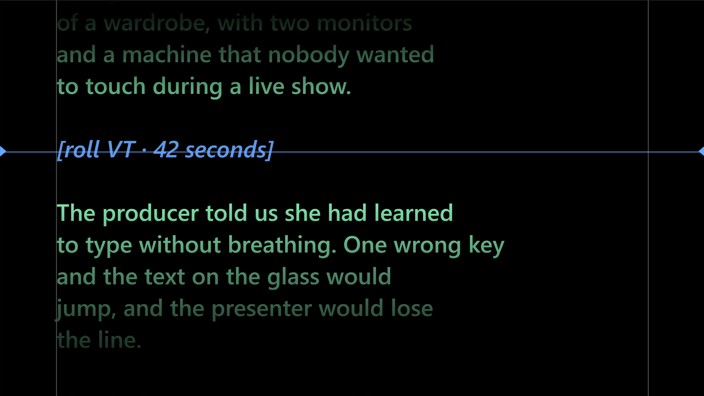
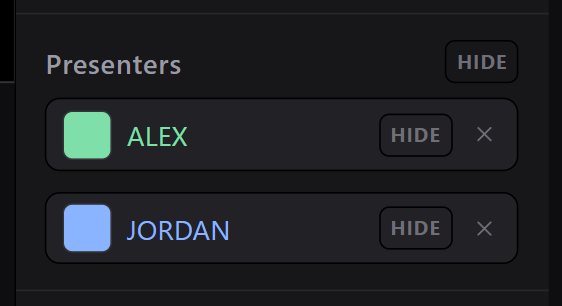
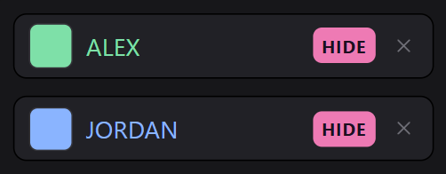
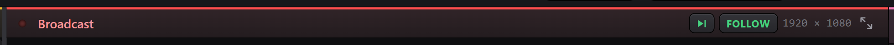
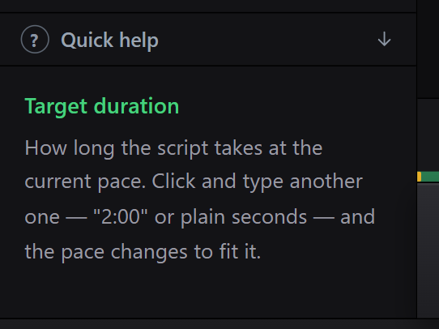
Flip one switch and the reading is published to a page on your own network. Point a phone's camera at the QR code and it is following the same script, at the same word, cards included. Nothing to install, nothing to pair, no cable across the studio.
That is the director, the floor manager, the presenter rehearsing in the dressing room and camera two on the far side of the room — all reading the same thing, on hardware everyone already has in their pocket.
It is the reading that travels, not a video feed. No NDI, no SDI, no screen capture: the same page redraws itself in each browser. That is why it works on ordinary wi-fi — and why card video can be told to go out lighter while the presenter's screen always gets the original.
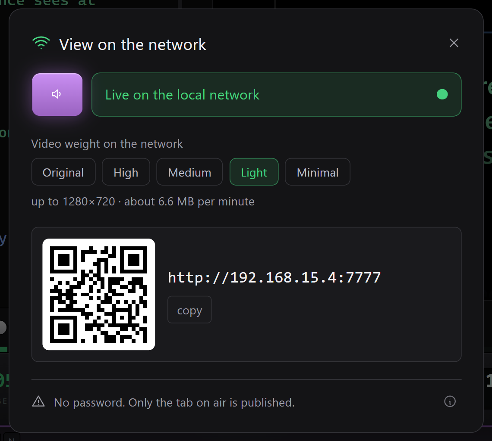
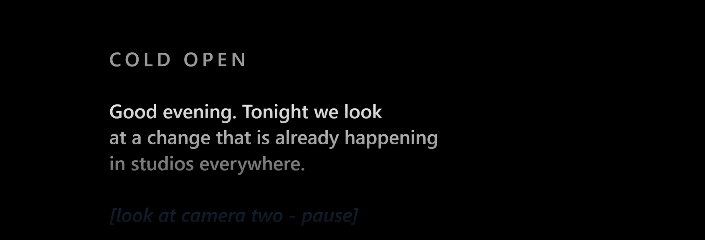
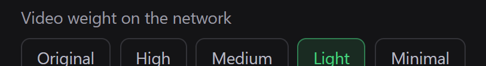
Images, video, messages and screens reach the presenter's screen with one click or a number key. Each card either replaces the script or rides over it — which is how a lower third and a caption share one screen.
Legibility over a card is a three-way choice: a dark band, a shadow behind each letter, or nothing at all.
Video plays the file as it arrived whenever the browser can handle it. When it cannot, ffmpeg first tries to change only the container — seconds, no pixel touched — and re-encodes only when the content genuinely will not fit an mp4.
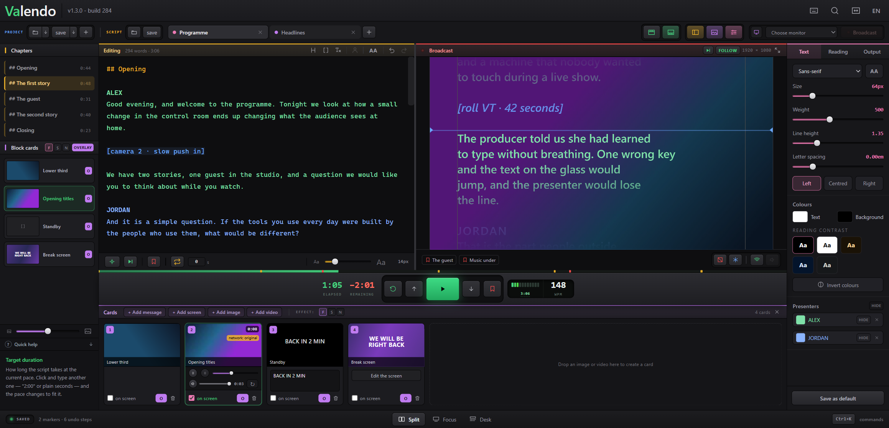
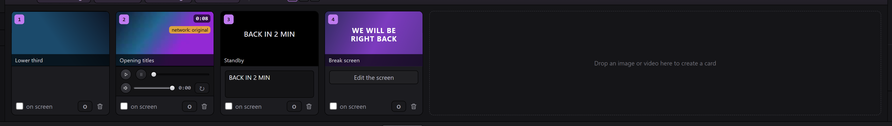
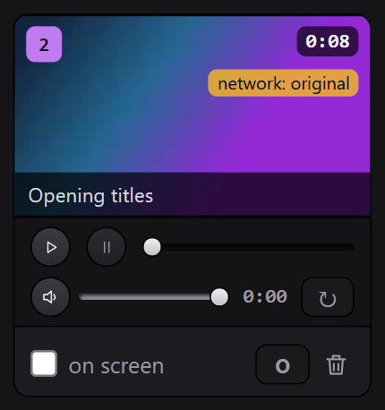
The fourth kind of card is one the app draws itself. A colour, or two colours and an angle, or one of six slow animated backgrounds — drift, breathe, sweep, waves, bars, dust — with a message over it if you want one.
The difference is not about looks. An image card points at a file; a screen card is a handful of numbers. It weighs nothing inside the project, has no link that can go stale, needs no lighter copy made for the network, and the same numbers draw it at 176 pixels in the drawer and at full resolution on the glass.
The six effects are slow on purpose — a restless background argues with whoever is reading — and two sliders scale the whole set at once: how fast it moves, and how much the movement shows over the base colour.
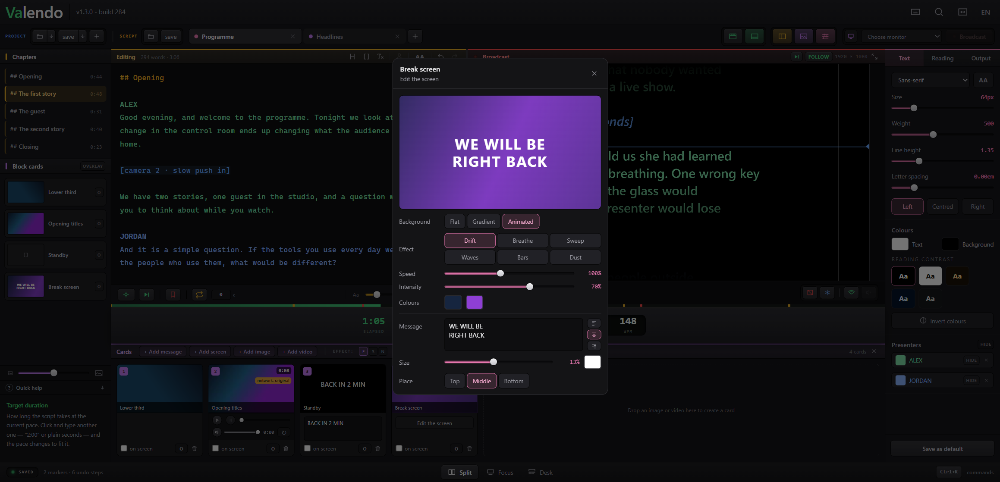
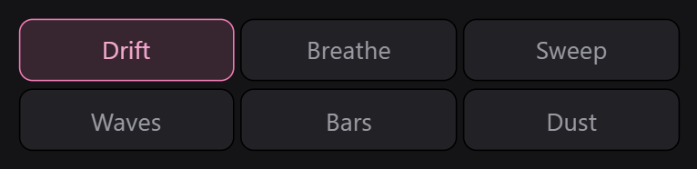
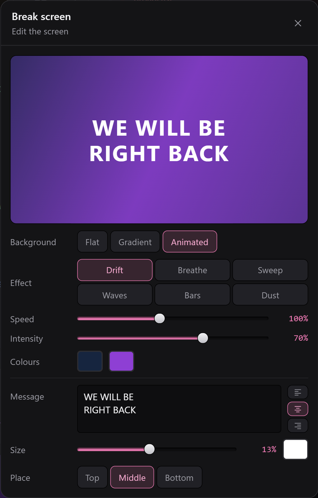
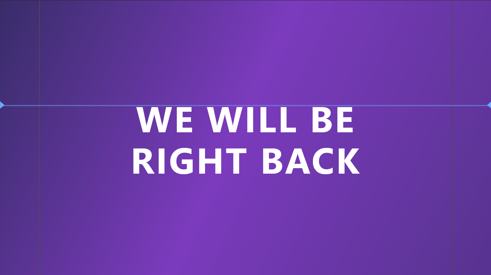
Pick a monitor, flash a number on each screen to be sure which is which, then send the show. Mirror on either axis for teleprompter glass, rotate 90° for a panel mounted sideways, black out or freeze on a key.
If that monitor is unplugged mid-show, Valendo closes the output rather than leaving a window at coordinates that no longer exist.
Dim the edges fades the script away from the line being read, so the eye has one place to land. The clear window follows the reading mark wherever you put it, and a slider decides how wide it stays — from most of the screen down to a band about one line tall.
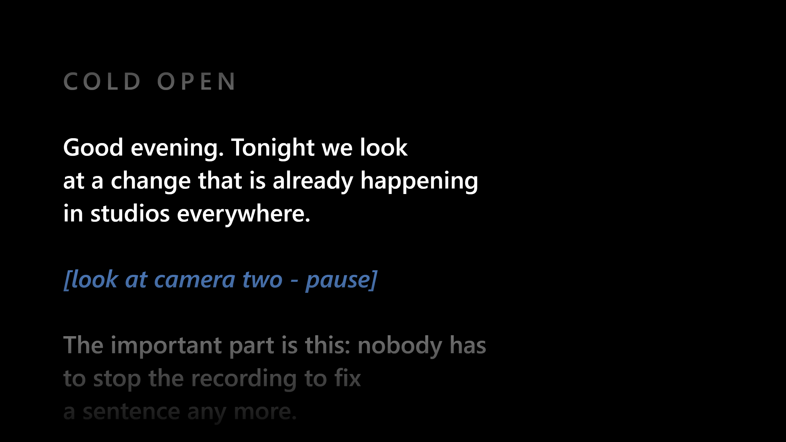
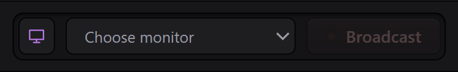
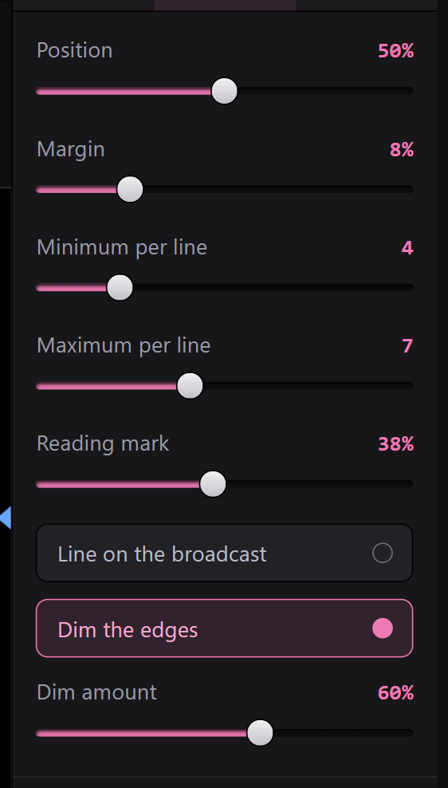
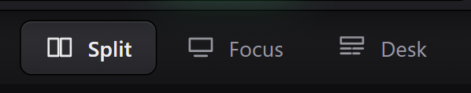
Split is the picture at the top of this page — the editor and the presenter's screen together, which is how a show is operated.
Focus hides everything except the script and the transport, for the last rehearsal before air.
Desk turns the script into a rundown: every block with its word count, duration and on-air status, and a timeline across the top.
Every appearance control is live while the show runs — family, size, weight, line height, letter spacing, ALL CAPS, margin, horizontal position, words per line, alignment and colour presets.
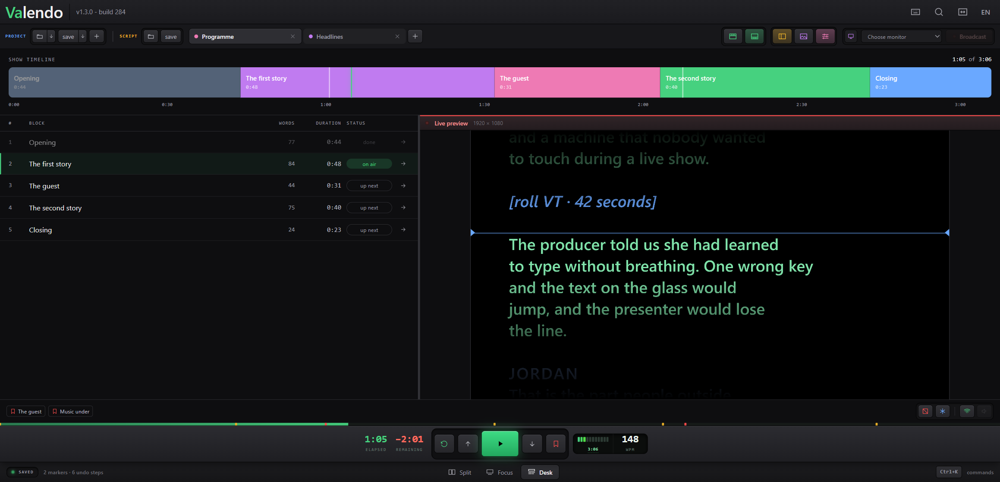
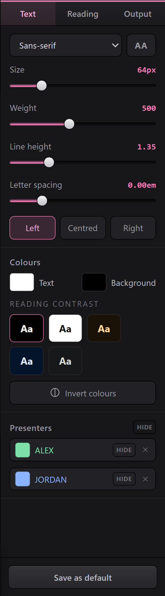
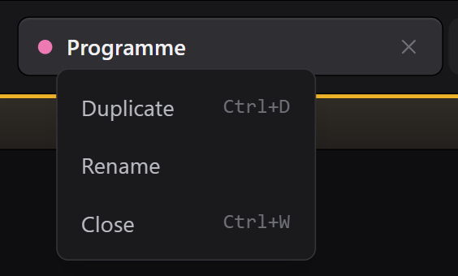
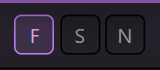
Valendo never restores the last script by itself. Opening a teleprompter in a studio that is not yours, or with the machine already mirrored to a wall, would otherwise put the previous show in front of whoever is in the room — and a script is a client's material.
The screen starts blank. Pick up where I left off is a deliberate click, and the list of recent projects can be emptied for good.
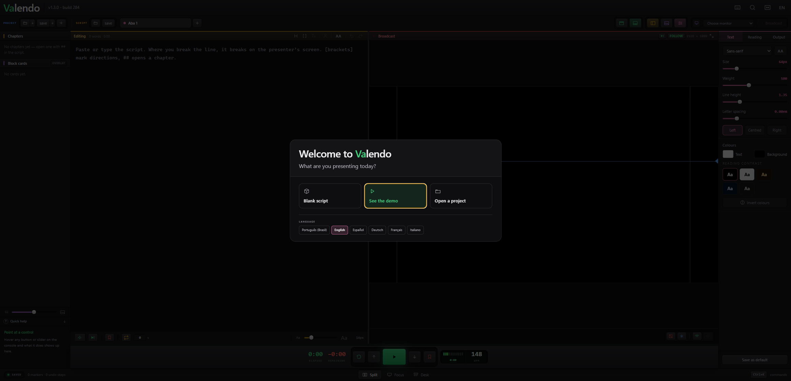
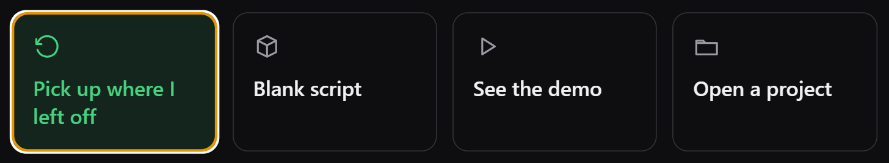
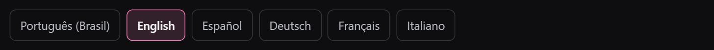
The reading position is a semantic anchor: { blockId, wordOffset }.
Block seven, word thirty-four — a place in the text, not a pixel on the screen. After any reflow
the pixel is recomputed from it, which is the whole reason editing on air is a normal thing to do
here instead of a stunt.
The main process keeps three numbers: pace, where the reading started, and when. Each window solves the same equation. Nothing is sent per frame, so nothing can drift.
The same code draws the broadcast and the operator's preview. The preview runs at the output's real viewport and only gets a scale. The replica is exact by construction.
A word rule decides where a line breaks, not the browser. Changing the type size changes the height of a line and nothing else.
The Reading Anchor goes through it properly.
Run the -setup.exe from
Releases.
It installs per user, so it does not ask for an administrator password. SmartScreen warns about
an unrecognised publisher — More info → Run anyway.
Open the .dmg, drag Valendo to Applications, then run this once in Terminal —
before the first launch, and again for every version you download:
xattr -dr com.apple.quarantine /Applications/Valendo.appIt prints nothing and asks for nothing; silence means it worked. Without it macOS says "Valendo is damaged and can't be opened" and offers only Move to Bin. The app is not damaged — that is the message macOS gives a downloaded app it cannot verify with Apple, because this one is not notarised. The flag is applied by the browser, to that particular file, which is why a new download arrives flagged again.
Download from the command line instead and there is nothing to clean up, because the flag is never applied:
curl -L -o ~/Downloads/Valendo.dmg \
https://github.com/samaBR85/Valendo-TeleprompterSuite/releases/latest/download/Valendo-1.3.0-arm64.dmgIntel Macs are not shipped as a download, but the app builds and runs on them — see Building from Source.
git clone https://github.com/samaBR85/Valendo-TeleprompterSuite.git
cd Valendo-TeleprompterSuite
npm install
npm run devThe rest — the other commands, the project layout, the tests — is in Building from Source.